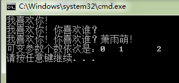

不定参数函数实现var_arg系列的宏
电驴的源码日志模块有一个叫 DebugLogError 函数，其签名如下：
//代码位于easyMule-master/src/WorkLayer/Log.h 55行
void DebugLogError(LPCTSTR pszLine, ...);
电驴的源码可以在公众号【 高性能服务器开发 】后台回复“获取电驴源码”即可获取。
这个函数的申明在 Log.h 头文件中，是一个全局函数，其实现代码在 Log.cpp 文件中：
//代码位于easyMule-master/src/WorkLayer/Log.cpp 111行
void DebugLogError(LPCTSTR pszFmt, ...)
{
va_list argp;
va_start(argp, pszFmt);
LogV(LOG_DEBUG | LOG_ERROR, pszFmt, argp);
va_end(argp);
}
这个函数是一个具有不定参数的函数（也就是参数个数不确定），比如调用这个函数我们可以传入一个参数，也可以传入二个或者三个参数等等：
DebugLogError(L"我喜欢你!");
DebugLogError(L"我喜欢你!", L"你喜欢谁？");
DebugLogError(L"我喜欢你!", L"你喜欢谁？", L"萧雨萌!");
与此类似， C 语言中最熟悉的函数 printf() 和 scanf() 就是能传入不定参数的函数的例子，可是你知道如何编写这样具有不定参数的函数么？
你可以通过这段代码学习到编写方法，奥秘就在DebugLogError()中使用的几个你从来没见过的宏，让我们欢迎它们：
- va_list
- va_start
- va_end
这几个宏是C函数库提供的，位于头文件stdarg.h中。下面我们利用这几个宏自定义一个ShowLove()函数：
#include <stdio.h>
#include <tchar.h>
#include <stdarg.h>
#include <locale.h>
int ShowLove(wchar_t* szFirstSentence, ...)
{
//用来统计可变参数数量
int num = 0;
//第一步：
//申明一个va_list类型对象ap，用于对参数进行遍历
va_list ap;
//第二步：
//使用va_start对变量进行初始化
//这里需要注意的是:
//在传统C语言中，va_start把ap中内部指针设置为传递给函数参数的【第一个实参】；
//而在标准的C中，va_start接受一个额外参数，也就是最后一个【固定参数】的名称，
//并把ap中的内部指针设置为传递给函数的第一个【可变参数】.
//所以你在VC++ 6.0和VS2008等高版本的编译器中使用va_start需要注意区别
//这里使用标准C
va_start(ap, szFirstSentence);
//第三步：
//使用va_arg宏返回实参列表中的下一个参数值，并把ap的内部指针推向下一个参数（如果有的话）
//必须指定下一个参数的类型。
//在调用va_start之后第一次调用va_arg将返回第一个可变参数的值
wprintf(szFirstSentence);
wchar_t* p = 0;
while(p = va_arg(ap, wchar_t*))
{
wprintf(L"%s", p);
num ++;
}
//第四步：
//待所有可变参数都读取完毕以后，调用va_end宏对ap和va_list做必要的清理工作
va_end(ap);
return num;
}
int main(int argc, char* argv[])
{
setlocale(LC_ALL, "");
int z = ShowLoveL"我喜欢你！\n");
int y = ShowLove(L"我喜欢你！", L"你喜欢谁？\n");
int l = ShowLove(L"我喜欢你！", L"你喜欢谁？", L"萧雨萌！\n");
printf("可变参数个数依次是：%d\t%d\t%d\n", z, y, l);
return 0;
}
上述代码的运行结果是：

这里顺便补充下，va 的是英文 varied arguments （可变参数）的意思。关于 va_list 等宏的实现原理其实也很容易搞明白，这里不再讲解了。
我们现在来看看函数 DebugLogError()：
void DebugLogError(LPCTSTR pszFmt, ...)
{
va_list argp;
va_start(argp, pszFmt);
LogV(LOG_DEBUG | LOG_ERROR, pszFmt, argp);
va_end(argp);
}
其他的没什么，就是调用了一个函数叫 LogV()，LogV() 的的声明位于 Log.h 文件中，也是一个全局函数：
void LogV(UINT uFlags, LPCTSTR pszFmt, va_list argp);
其实现代码位于 Log.cpp 文件中：
void LogV(UINT uFlags, LPCTSTR pszFmt, va_list argp)
{
AddLogTextV(uFlags, DLP_DEFAULT, pszFmt, argp);
}
这里又调用了一个函数 AddLogTextV()，这个函数的也声明在 Log.h 中：
void AddLogTextV(UINT uFlags, EDebugLogPriority dlpPriority, LPCTSTR pszLine, va_list argptr)；
其实现代码在 Log.cpp 文件中：
void AddLogTextV(UINT uFlags, EDebugLogPriority dlpPriority, LPCTSTR pszLine, va_list argptr)
{
ASSERT(pszLine != NULL);
if ((uFlags & LOG_DEBUG) && !thePrefs.GetVerbose() && dlpPriority >= thePrefs.GetVerboseLogPriority())
return;
//Xman Anti-Leecher-Log
if ((uFlags & LOG_LEECHER) && !thePrefs.GetAntiLeecherLog())
return;
//Xman end
TCHAR szLogLine[1000];
if (_vsntprintf(szLogLine, ARRSIZE(szLogLine), pszLine, argptr) == -1)
szLogLine[ARRSIZE(szLogLine) - 1] = _T('\0');
if(CGlobalVariable::m_hListenWnd)
UINotify(WM_ADD_LOGTEXT, uFlags, (LPARAM)new CString(szLogLine));
// Comment UI
/*if (theApp.emuledlg)
theApp.emuledlg->AddLogText(uFlags, szLogLine);
else*/
/*if(SendMessage(CGlobalVariable::m_hListenWnd, WM_ADD_LOGTEXT, uFlags, (LPARAM)szLogLine)==0)*/
else
{
TRACE(_T("App Log: %s\n"), szLogLine);
TCHAR szFullLogLine[1060];
int iLen = _sntprintf(szFullLogLine, ARRSIZE(szFullLogLine), _T("%s: %s\r\n"), CTime::GetCurrentTime().Format(thePrefs.GetDateTimeFormat4Log()), szLogLine);
if (iLen >= 0)
{
//Xman Anti-Leecher-Log //Xman Code Improvement
if (!((uFlags & LOG_DEBUG) || (uFlags & LOG_LEECHER)))
{
if (thePrefs.GetLog2Disk())
theLog.Log(szFullLogLine, iLen);
}
else
if (thePrefs.GetVerbose()) // && ((uFlags & LOG_DEBUG) || thePrefs.GetFullVerbose()))
{
if (thePrefs.GetDebug2Disk())
theVerboseLog.Log(szFullLogLine, iLen);
}
//Xman end
}
}
}
我们从源头函数调用来理下思路：
- 首先用下列参数调用 DebugLogError()：
DebugLogError(L"Unable to load shell32.dll to retrieve the systemfolder locations, using fallbacks");
- 然后在上述函数内部又调用：
LogV(LOG_DEBUG | LOG_ERROR,
L"Unable to load shell32.dll to retrieve the systemfolder locations, using fallbacks",
argp);
其中，argp 是函数 DebugLogError() 的内部变量，而 LOG_DEBUG 和 LOG_ERROR 是 Log.h 中定义几个宏，其类型为整形：
// Log message type enumeration
#define LOG_INFO 0
#define LOG_WARNING 1
#define LOG_ERROR 2
#define LOG_SUCCESS 3
#define LOGMSGTYPEMASK 0x03
// Log message targets flags
#define LOG_DEFAULT 0x00
#define LOG_DEBUG 0x10
#define LOG_STATUSBAR 0x20
#define LOG_DONTNOTIFY 0x40
#define LOG_LEECHER 0x80 //Xman Anti-Leecher-Log
- 最后调用：
AddLogTextV(LOG_DEBUG | LOG_ERROR,
DLP_DEFAULT,
L"Unable to load shell32.dll to retrieve the systemfolder locations, using fallbacks",
argp);
这个函数的第二个参数类型是一个定义在 Log.h 中的枚举变量 EDebugLogPriority，代表调试的记录级别，其取值如下：
enum EDebugLogPriority{
DLP_VERYLOW = 0,
DLP_LOW,
DLP_DEFAULT,
DLP_HIGH,
DLP_VERYHIGH
};
这里提醒一点，由于枚举量 DLP_VERYLOW = 0，所以后面的 DLP_LOW、 DLP_DEFAULT、 DLP_HIGH、 DLP_VERYHIGH 就依次等于1、2、3、4，这是C语言规定的，C语言规定枚举量如果不赋初值，根据前面一个量的值依次递增。
我们来实际看看AddTextLogText()函数的实现代码：
void AddLogTextV(UINT uFlags, EDebugLogPriority dlpPriority, LPCTSTR pszLine, va_list argptr)
{
ASSERT(pszLine != NULL);
if ((uFlags & LOG_DEBUG) && !thePrefs.GetVerbose() && dlpPriority >= thePrefs.GetVerboseLogPriority())
return;
//Xman Anti-Leecher-Log
if ((uFlags & LOG_LEECHER) && !thePrefs.GetAntiLeecherLog())
return;
//Xman end
首先是一个ASSERT断言，这个断言要求 pszLine （函数第三个参数）不能为空。
接着如果同时满足下列两个条件，则函数返回：
- 条件1：表达式 ((uFlags & LOG_DEBUG) || (uFlags & LOG_LEECHER)) 为真；
- 条件2：表达式 !(thePrefs.GetVerbose() && dlpPriority >= thePrefs.GetVerboseLogPriority()) 为真。
我们先看条件1，很多年以前，我对这种按位或运算（|）和按位与运算（＆）来组合这些程序中的标志的原理一头雾水，虽然那个时候，我知道这些运算符的含义。
现在就以这两个为例吧：
按位或运算，就是把两个数在二进制层面上按位或，比如二进制数：
11 | 10 = 11
第一个数字高位上 1 与第二个数字高位上的 1 来进行或运算，等于 1，放在高位；
第一个数字低位上 1 与第二个数字低位上的 0 来进行或运算，等于 1，放在低位。
同理，与运算：
11 & 10 = 10
按位与，要求两个数字都是 1 才是 1；而按位或只要有一个是 1 就等于 1，除非两者都是 0，则为 0。
看个复杂的：
11001100 & 10101010 = 10001000
这种做法有个两个好处：
第一，可以将某个位置的上的数字来代表当前的状态，比如电路中 1 代表开，0 代表关。那么我用下面数字 a ＝ 10001000 表示电路开关状态，你会发现电路是开的。
再比如，颜色值 RGB 表示法：CD1298， 我想把其中绿色值单独提取出来，怎么做？
方法：
GreenValue = 0xCD1298 & 0x001200,这样就可以做到了。
第二，因为是二进制层次上的操作，所以速度非常快。
我们现在分析下代码：
(uFlags & LOG_DEBUG) || (uFlags & LOG_LEECHER)
先看第一部分：
uFlags & LOG_DEBUG
再结合下面的定义：
// Log message targets flags
#define LOG_DEFAULT 0x00
#define LOG_DEBUG 0x10
#define LOG_STATUSBAR 0x20
#define LOG_DONTNOTIFY 0x40
#define LOG_LEECHER 0x80 //Xman Anti-Leecher-Log
这几个常量定义的数值是有讲究的，不是任何数值都行的。我们将它们都化成二进制：
LOG_DEFAULT 0000 0000
LOG_DEBUG 0001 0000
LOG_STATUSBAR 0010 0000
LOG_DONTNOTIFY 0100 0000
LOG_LEECHER 1000 0000
这样假如 uFlags = 1010 0000，这样我要检测是否设置了LOG_DEBUG，我只要这样做：
Result = uFlags & LOG_DEBUG
计算结果
Result => 0000 0000 => 0
这样 if（RESULT）{} 中条件为假；说明我没有设置这个标志位；同理我需要检测是否设置 LOG_STATUSBAR 标志，则执行：
Result = uFlags & LOG_STATUSBAR = 0001 0000
这个数字化为十进制不为 0，所以为真，因此在判断语句里面条件也为真，说明设置了这个标志位。
这是正面检测，反过来我想设置这些标识位，而且可以一次设置多个标志位，比如
uFlags = LOG_STATUSBAR | LOG_DONTNOTIFY | LOG_LEECHER = 1110 0000
是不是一目了然？
而且我也可以很方便地从设置好的标志位中去掉某个或某些标识位，比如我想从上面的uFlags值中去掉LOG_DONTNOTIFY 标识，怎么办？这样做就可以了：
uFlags & (~LOG_DONTNOTIFY)
来解释下～符号是二进制层次上求反，将对应位上的 1 改为 0，0 改为 1，那么：
~ LOG_DONTNOTIFY = 1011 1111
然后与 uFlags 或起来等于 1010 0000，你看下是不是刚好把 LOG_DONTNOTIFY 去掉了呀？
这种方法效率高不仅是因为在二进制层次上运算，而且它可以用一个较小的数据类型代表多个信息，对数据的利用程度精准到二进制位。